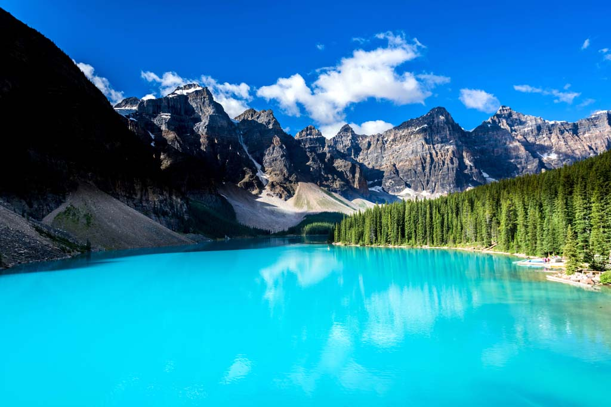
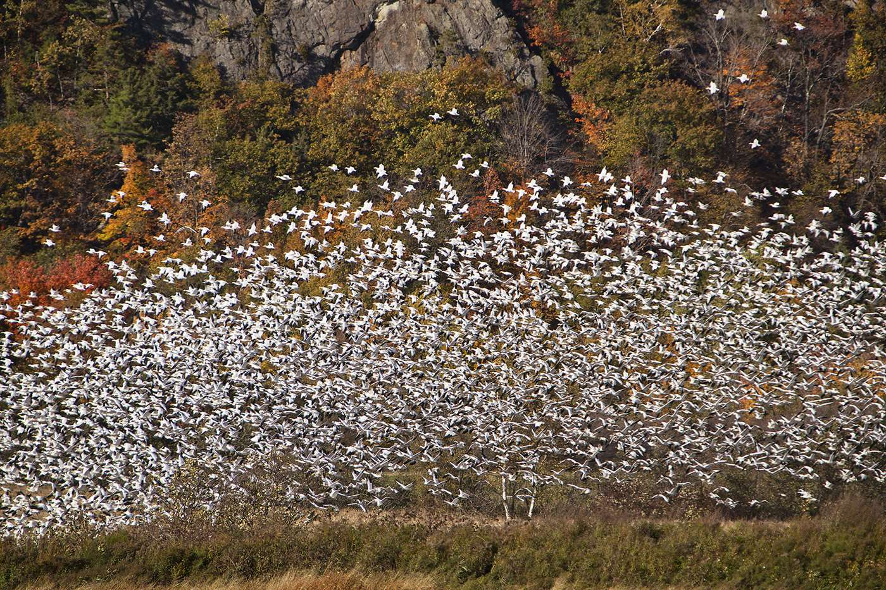
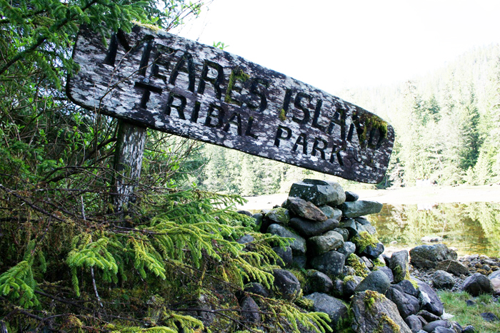
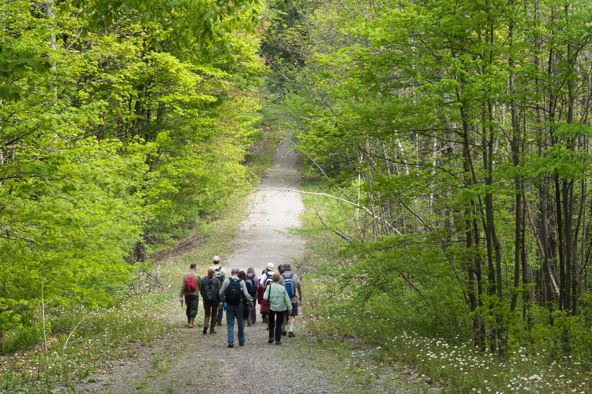

A protected area refers to a region of land that is given special treatment to allow its ecosystem and nature elements to be preserved for the future, e.g., national parks, wilderness areas, community conserved areas, and nature reserves.
National parks are protected by the government, and the public is allowed accessed to them.

Moraine lake in Banff National Park, located in Canmore, Alberta, Canada. A national park.
(https://www.macleans.ca/wp-content/uploads/2017/06/MAC06_06_PHOTO_CONTEST01.jpg )
Wilderness areas are pieces of land that have not been impacted by human activity, and the public is not allowed accessed to them.

Snow geese flying in a group in the Cap Tourmente National Wildlife Area, located in Saint-Joachim, Quebec, Canada. A wilderness area.
(https://static.quebecregion.com/media/17797/photo-captourmente-3_cr_eccc.jpg?preset=format-max-1400 )
Community conserved areas refers to ecosystems protected by indigenous people of the land.

Entrance to the Meares Island Tribal Park, located in Vancouver Island, British Columbia, Canada. A community conserved area.
(http://ammsa.com/sites/default/files/articles/article-photos/p8-mg_6738_0.jpg )
Nature reserves are protected areas that are used for research purposes.

Visitors walking along a path through the Happy Valley Forest, located in Toronto, Ontario, Canada. A nature reserve.
(http://photographybymiguel.com/wp-content/galleries/ncc-happy-valley-forest/NCC-Volunteers-Happy-Valley-Forest-MHP-4444.jpg )
International Union for Conservation of Nature. (n.d.). About - Protected Areas. Retrieved from
https://www.iucn.org/theme/protected-areas/about
Benefits of Protected Areas
Provides clean drinking water to the populace
Behaves as excellent carbon sinks to reduce the amount of carbon in the atmosphere, i.e., they provide clean air to us
Are natural buffers that mitigate the effects of: floods, storm-surges, droughts, rising sea-levels, etc., from affecting populated areas
Keeps us healthy by producing clean air and water for us to consume
Ensures food security of neighbouring communities by preserving wildlife and natural vegetation
Sustains jobs, residences, and daily lives of people from around the globe, as protected areas have a far-reaching effect on society
World Parks Congress. (n.d.). What are Protected Areas? Retrieved from
https://www.worldparkscongress.org/wpc/about/what_are_protected_areas
Websites for Further Information on Protected Areas in Canada
Government of Canada. (2018, August 13). National Parks. Retrieved from
https://www.pc.gc.ca/en/pn-np
https://www.ontario.ca/page/ontarios-parks-and-protected-areas
https://www.thecanadianencyclopedia.ca/en/article/protected-areas
https://www.canadiangeographic.ca/article/infographic-canadas-protected-areas
http://www.wwf.ca/conservation/oceans/marine_protected_areas/
https://www.protectedplanet.net/
Information content credited to the following sites:
www.iucn.org
www.worldparkscongress.org
www.pc.gc.ca
www.ontario.ca
www.thecanadianencyclopedia.ca
www.canadiangeographic.ca
www.wwf.ca
www.protectedplanet.net
Copyright © Ibrahim Jomaa - 300911528 | COMP213 - Web Interface Design - Fall 2018 | Assignment 2